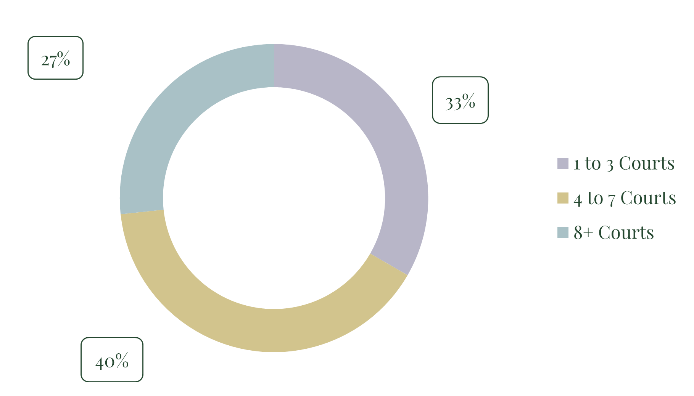

Analysis of Queensland’s dedicated pickleball venues shows that 40% of facilities operate between 4 and 7 courts, making this the most common venue size within the dataset. Venues with 1 to 3 courts account for approximately 33%, while larger facilities with 8 or more courts represent around 27% of total supply.
This distribution indicates that while smaller-format venues remain present, the majority of dedicated pickleball facilities in Queensland are now delivered at a mid-to-large scale. The prevalence of 4+ court venues reflects an operational preference for greater capacity, flexibility in programming, and improved peak-time utilisation, particularly in markets where participation continues to deepen.
The dataset includes 15 dedicated pickleball venues only and excludes shared-use or multi-sport facilities, providing a clearer view of how purpose-built pickleball developments are currently being sized across the state.
Venue supply data for this analysis was sourced using PickleGrid — our go-to platform for mapping and analysing leisure facility supply across Australia.